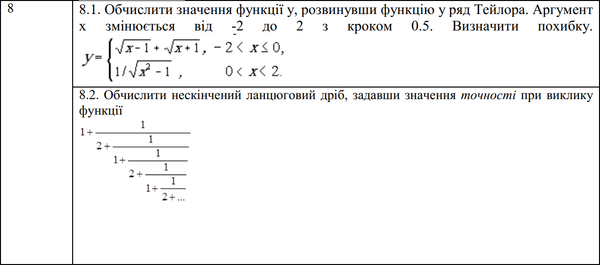
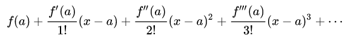
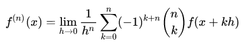
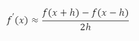
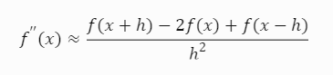
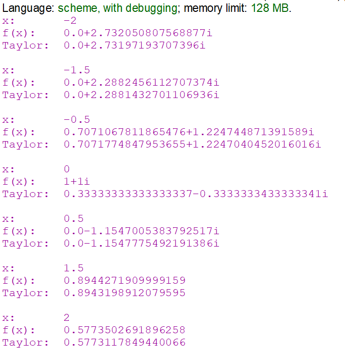
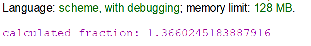
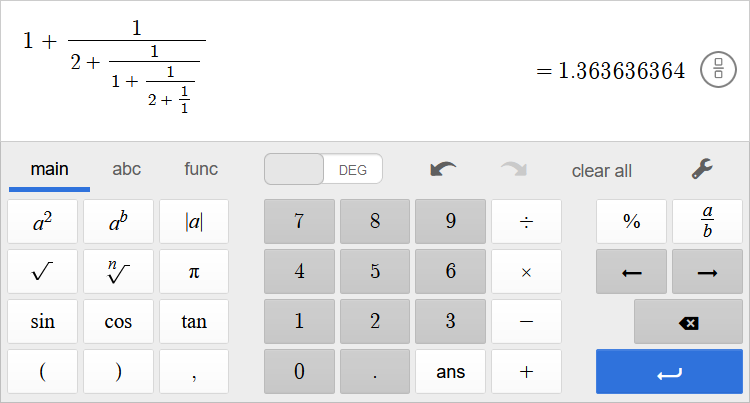

Функціональне програмування
Факультет інформаційних технологій
Кафедра програмних систем та технологій
Лабораторна робота 2
Рекурентні співвідношення для тригонометричних, експоненціальних функцій та ланцюгові дроби
Примачук Максим Григорович
Група: ІПЗ-44мс
Викладач: Ніколаєнко А.Ю.
2023
Мета
Опанувати теоретичні основи застосування рекурентних співвідношень для обчислення тригонометричних, експоненціальних, степеневих функцій та розробити програми функціональними мовам програмування для обчислення їх значень
Варіант 8
Хід роботи
Завдання 1
Ряд Тейлора використовується для представлення функції у вигляді нескінченної суми членів. Ці члени обчислюються на основі похідних функції в певній точці:
Де a - точка, навколо якої розгортається ряд. Це точка, в якій оцінюється функція та її похідні. Різниця (x - a) - це відстань від цієї точки.
Щоб імплементувати обчислення функцій за допомогою ряду Тейлора необхідно створити допоміжну функцію для обчислення похідної вищого порядку:
Ця формула генерує вирази для обчислення n-ї похідної функції за методом скінченних різниць, наприклад:
 Код
Посилання
; факторіал
(define (factorial n)
(if (= n 0)
1
(* n (factorial (- n 1)))))
; комбінація C(n, k)
(define (comb n k)
(/ (factorial n) (* (factorial k) (factorial (- n k))))
)
; функція для обчислення n-ї похідної f(x)
; n - номер похідної
; h -> 0, h ~ 10e-5
(define (diff-n f x n h)
; член ряду
(define (term n k)
(* (expt -1 (+ k n))
(comb n k)
(f (+ x (* k h))))
)
; cума членів ряду
(define (sum-seq n k acc)
(if (> k n)
acc
(sum-seq n (+ k 1) (+ acc (term n k)))
)
)
; ділення cуми членів ряду на h^n
(/ (sum-seq n 0 0) (expt h n))
)
; обчислення ряду Тейлора
; n - кількість членів ряду
(define (taylor-series f x h n)
; член ряду
(define (term k)
(/ (* (diff-n f x k 10e-5) (expt h k)) (factorial k)) ; h = a - x
)
; cума членів ряду
(define (sum-terms k)
(if (> k n)
0
(+ (term k) (sum-terms (+ k 1)))))
(sum-terms 0))
(define (f x)
(if (> x 0)
(/ 1 (sqrt (- (* x x) 1)))
(+ (sqrt (+ x 1)) (sqrt (- x 1)))
)
)
; виведення результатів
; при x = +- 1 виникає ділення на 0
; тільки при x = 1.5, x = 2 f(x) має реальні значення
(for-each (lambda (x)
(display "x: ")
(display x)
(newline)
(display "f(x): ")
(display (f x))
(newline)
(display "Taylor: ")
(display (taylor-series f x 10e-5 3))
(newline)
(newline)
)
'(-2 -1.5 -0.5 0 0.5 1.5 2))
(newline)
Результат
Завдання 2
Код
Посилання
(define (calculate-fraction accuracy)
(calculate-fraction-high-iter 0 accuracy))
; обчислює значення дробу для поточного і наступного значень ітерації
; якщо абсолютна різниця між цими двома значеннями менша за точність, повертає наступне значення
; в іншому випадку рекурсивно викликає сама себе з параметрами (+ iter-count 1) та accuracy
(define (calculate-fraction-high-iter iter-count accuracy)
(let ((prev (+ 1 (/ 1 (+ 2 (calculate-fraction-iter #f iter-count)))))
(next (+ 1 (/ 1 (+ 2 (calculate-fraction-iter #f (+ iter-count 1)))))))
(if (< (abs (- next prev)) accuracy)
next
(calculate-fraction-high-iter (+ iter-count 1) accuracy))))
; генерує дріб із заданою глибиною
; Якщо кількість ітерацій дорівнює 0, повертає значення,
; обернене до num (яке дорівнює 2, якщо is-even == true, і 1 в протилежному випадку)
; в іншому випадку рекурсивно викликає себе з параметрами (not is-even) та (- iter-count 1)
(define (calculate-fraction-iter is-even iter-count)
(let ((num (if is-even 2 1)))
(cond ((equal? 0 iter-count) (/ 1 num))
(else
(/ 1 (+ num (calculate-fraction-iter (not is-even) (- iter-count 1))))))))
(newline)
(display (exact->inexact (calculate-fraction 10e-4)))
(newline)
Результат
Оцінка достовірності результату
Висновок
При виконанні лабораторної роботи реалізовано функцію, що обчислює наближене значення функції f(x) за допомогою ряду Тейлора. Для цього створено допоміжні функції для обчислення факторіалу, кількості комбінацій C(n, k) та n-ї похідної. Також реалізовано функцію, що обчислює значення нескінченного дробу із заданою точністю. Для цього створено функцію, яка генерує дріб із заданою глибиною та функцію, яка порівнює різницю наступного і попереднього дробу із заданою точністю.